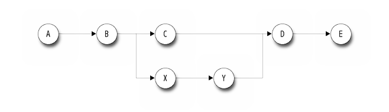
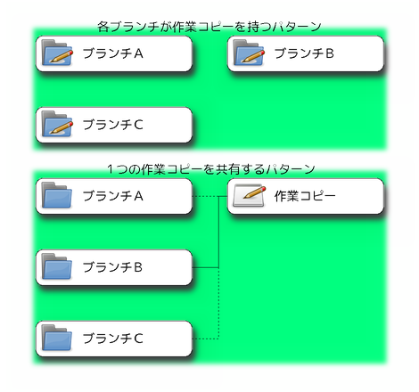
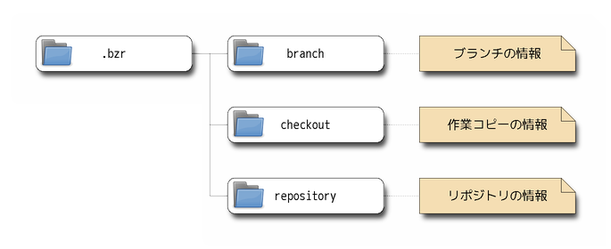
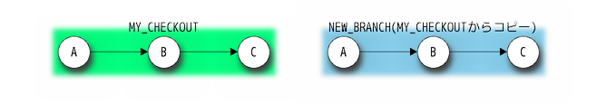
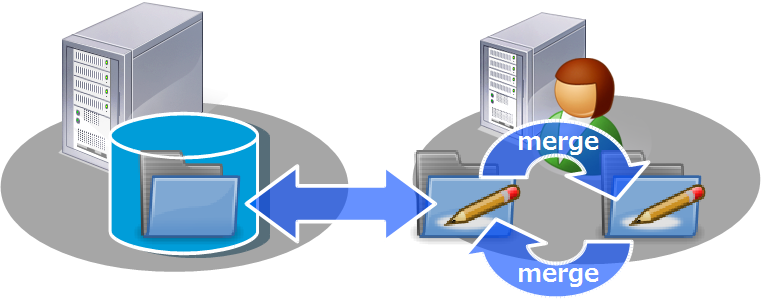
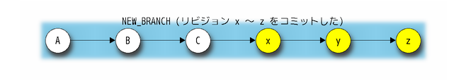
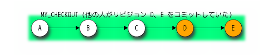
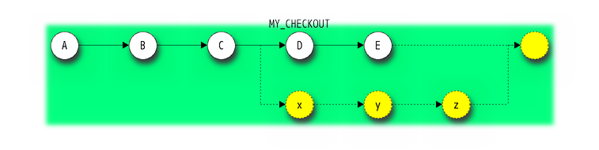
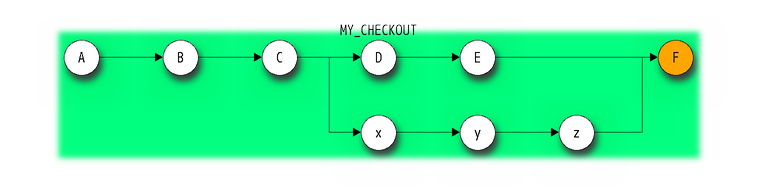

for SCM Boot Camp #2 (2011.11.19)
Bazaar をはじめ、バージョン管理ソフトでは、名詞と、 その名詞が指すものを作る操作の動詞が、同じ単語になっていることがよくあります。
先に用語をしっかり理解しておくと、あとは文脈で動詞か名詞かを判断できるはずなので、 混乱しないように丁寧に解説して行きます。
ここにいる人だったら知ってますよね。 自分がした変更をVCSに記録することを、 コミット (動詞)といいます。
１回のコミットで保存される情報をまとめたものです。１回コミットするたびに、新しいリビジョンがひとつ作られます。
「チェンジセット」と呼ばれることもあります。また、「コミット」(名詞)をリビジョンの意味で使うこともあります。
リビジョンに含まれる情報は、こんなかんじです。
Note
親のリビジョンは、１つとは限りません。マージ後のコミットでは２つの親を持つリビジョンができますし、 場合によっては３つ以上の親ができることもあります。
例えば、下の図だと、Cの親リビジョンはBですが、Dの親リビジョンはCとYの２つです。

リビジョンを積み重ねることで、開発が進んでいきます。この、一連のリビジョンの連なりが ブランチ (名詞)です。
リビジョンの説明で出した図のように途中で分岐することはありますが、 最新のリビジョン(HEAD)はひとつのブランチに対して常にひとつです。
既存のブランチからコピーして新しいブランチを作成することもできます。 コピーして作った新しいブランチには、自分だけの修正をどんどんコミットしていくことができます。 あるブランチで行った変更を別のブランチに送ったり、逆に別のブランチでの変更を自分のブランチに取り込んだりすることができます。
ブランチをコピーすること自体も「ブランチ」(動詞)といいます。ややこしいですね。 ブランチは英語で枝の意味ですが、一連のリビジョンが一本の「枝」と、ブランチをコピーして 元のブランチと新しいブランチで別々のコミットをしていくことは「枝分かれ」と言えます。
Note
Bazaarでは、ブランチはディレクトリとして見えています。例えばmasterというブランチの情報は、ファイルシステム上のmasterというフォルダに格納されています。 そのブランチがいらなくなれば、ディレクトリごと消してしまえばＯＫです。
実際にプログラミングなどの作業を行うワークスペースを、 作業コピー または 作業ツリー といいます。
普通にブランチを作ると、作業コピーも一緒にくっついてきますが、あえてブランチには作業コピーを持たせずに、別のフォルダに作業コピーを作ることもできます。 これは、複数のブランチでひとつの作業コピーを使いまわすような使い方をするときに役立ちます。

Note
作業ツリー自体のことを「チェックアウト」(名詞)ということもあります。 また、後で出てきますが、作業ツリーを作る動作のことを「チェックアウト」(動詞)と呼びます。
リポジトリ (名詞)とは、リビジョンの情報を格納したデータベースのことです。 (「リビジョン」と「リポジトリ」は動詞になりません)
Note
GitやMercurialのリポジトリは、それがそのままプロジェクトを表しますが、Bazaarのリポジトリは、本質的には単なる入れ物でしかなく、それ自体が何かを表すわけではありません。
その気になれば、MySQLのブランチとemacsのブランチを同じリポジトリに突っ込んだりとかも出来ます。普通はしませんがｗ
Bazaarにとって重要なのはブランチです。ほとんどの操作も、ブランチに対して実行されます。
例えば、 bzr log はリポジトリに対して実行できますが、これも実際にはリポジトリ内のすべてのブランチを対象にしてログ表示処理を実行しているだけです。
Bazaarの管理情報は、.bzrというフォルダの中に格納されます。この中のファイルについて、少しだけ見てみましょう。

.bzrの中には、主に３つのフォルダがあり、それぞれが、ブランチ／作業コピー／リポジトリの情報を格納しています。
必ず上の３つのフォルダがあるわけではありません。例えば、作業コピーをブランチとは別のところに作ることができるので、その場合はcheckoutフォルダだけになりますし、 逆に作業コピーを持たないブランチの場合はbranchフォルダだけということもあります。
Bazaarは運用の自由度がとても高いので、ここに上げる以外にもさまざまなパターンがありますが、 まずは初めて使う方におすすめのパターンをご紹介します。
サーバのブランチをチェックアウトすると、クライアント上に作業コピーを作成して、SVNのような集中型で使うことができます。:
# 作業コピーを取得
> bzr checkout http://url/to/remote/branch MY_CHECKOUT
SVNのように、updateで手元の作業コピーを更新したり、commitでサーバに変更を送信することができます。:
# 作業コピーを更新
> bzr update
# 変更した内容をコミット
> bzr commit -m "ラスボスがチェーンソーで即死してしまう不具合を修正"
履歴やDIFFは、オフラインでも参照することができます。
Warning
一時的にクライアント上だけでオフラインコミットをすることも出来ますが、そのコミットをサーバに送信するときの挙動にクセがあるので、初心者にはおすすめできません。
SVNを使う場合、updateのときにリモートの変更と作業コピー上で自分が行った変更がマージされますが、自分の変更はまだコミットされていない状態のため、コンフリクトが発生した 場合など、ちょっとしたミスで変更内容を失ってしまう危険と隣り合わせです。
Bazaarを集中型で使う場合でも、上に書いたようにオフラインで履歴やDIFFが見れたり、shelve/unshelveなどの便利な機能が増えたりなど、SVNにはないメリットがあるのですが、 この 「不安定なマージ」 をしなければならないという欠点は解決できません。
そこで分散型の出番ですよ。
実は、ステップ１で作った作業コピーは、 update や commit のたびにリモートのブランチと同期されるブランチを持っています。 (オフラインでも履歴や差分が確認できるのは、この同期されたブランチがあるからです。) これをコピーして、新しく別のブランチを作ることができます。:
# MY_CHECKOUTのブランチをコピーして、NEW_BRANCHというブランチ(+作業コピー)を作る
> bzr branch MY_CHECKOUT NEW_BRANCH

この、新しく作ったブランチ(+作業コピー)は、他のブランチからは独立しているので、ここでは自分の都合で好きにコミットをすることができます。
このブランチ上で開発を進めて、十分な完成度に達したらサーバにアップロードします。
NEW_BRANCH上で、x、y、zの３つのコミットをしたとしましょう。これをサーバにアップします。

まず、最初に作った作業コピーに移動して、サーバから最新のコードを取り込んでおきます。
# 最初の作業コピーに移動
> cd ../MY_CHECKOUT
# マージの前に、サーバから最新のコードを取得しておく
> bzr update
どうやら、他の人がリビジョンD、Eを追加していたようです。

さらに、mergeコマンドを使ってNEW_BRANCHでの修正を取り込みます。
# NEW_BRANCH上で行った変更を取り込む
> bzr merge ../NEW_BRANCH

これで、サーバ側の修正(他の人がした修正)と、自分がNEW_BRANCH上でした修正がマージされます。 Gitと違って、この時点ではまだコミットはされません。
自動でマージできなかった場合は、SVNなどと同じようにコンフリクトが発生し、手動でマージしなければならなくなります。 しかし、自分でした修正はNEW_BRANCH上できっちりコミット済みなので、 **「失敗したら元にもどせなくなるかも」みたいな心配はせずに安心して作業できます。* *
マージが終わったら、変更をコミットします。
> bzr commit -m "NEW_BRANCHでの修正(アイスソードを買えてしまう不具合の修正)を取り込んだ"

ステップ１での話を思い出してください。 ここでのコミットは、サーバへのコミットになる という話をしました。つまり、これでサーバへのアップロードは完了です。
同じように、サーバ側の修正を、NEW_BRANCHにmergeで取り込むこともできます。(ただ、個人的には、そうするとブランチが濁る気がするので、そういう場合はできるだけ rebaseコマンドを使う方が好みです。その辺の話はまたそのうち。)
マージを行うことによって、上記のような、ブランチが途中で枝分かれして、最終的にまたひとつになる形のブランチができます。 この、枝分かれした複数の経路の中で、 そのブランチにとってもっとも重要な経路を、メインライン と呼びます。
各ブランチは、ひとつずつメインラインを持っています。
Note
おおざっぱに説明すると、 そのブランチ上でコミットされたリビジョンのつながりがメインライン 、マージで他のブランチから取り込まれた経路はサブライン (という言葉はありませんが)ということになります。
上の例では、
です。
これは単なる概念上の問題ではなく、GUIやCUIでログを参照するときにも、メインラインとそれ以外は明確に区別されています。
Bazaarの標準的な運用では、各担当者のローカルなブランチ上でのコミットのやり方などはあまりうるさく言わない一方、 中央リポジトリ上のブランチのメインラインをきれいに保つ ことについては、かなり強く意識します。
という状態になっていれば、「きれいなメインライン」だと考えていいと思います。このあたりは、次の章でもう少し説明します。
# 参考文献 「Mercurial 入門セッション資料」@troter先生
SVNなどの集中型VCSでは、コミットすると全員の開発者に影響するため、次のような運用を行っていることが多いと思います。
分散型で運用している場合は、コミットは自分の作業領域のブランチにのみ反映されるので、1コミットに詰め込む必要はありません。 次の粒度でコミットし、任意のタイミングでサーバーにアップロードしましょう。
最初は「あとで戻したい単位でコミットする」を意識するとよいと思います。慣れてきたところで「一度に一つの変更をコミットする」に移行しましょう。
「一度に一つの変更をコミットする」ためは具体的には次のようなことを意識しましょう。
前向きに考えると次になります。
Note
Bazaarでは、マスターとなるブランチのメインラインの履歴にはこだわりますが、メインライン上に現れないサブの履歴の コミットについては比較的寛容です。
どれだけ細かい粒度でコミットしても、最後にメインのブランチにマージする時にはメインライン上の 1コミットにまとめられるので、履歴がうるさくなることを気にする必要はありません。 ファイルの add 漏れとか、ソースコードの typo とか、コミットコメントがわかりにくいなどの汚いコミットも、 最後にメインのブランチにマージするまでに修正すれば最後には綺麗な1つのコミットになるので、失敗を恐れず どんどんコミットしましょう。
Note
Bazaarには uncommit というコマンドがあり、このコマンドでコミットを最新のものからいくつでも取り消すことができます。
「メインラインでないとはいえ、汚いコミットをサーバに上げるのはオレの美学が許さねえ」 という人は、
というのもアリですね。
コミットコメントについては、あまりルールはありません。以下のような基準を念頭において、プロジェクトごとに使いやすいルールを決めてください。
禁則文字は特にありません。日本語の使用も自由です。
複数行にわたるメッセージを書く場合は、１行目に概要(見出し)を書きます。
マージ後のコミットには、ちゃんと変更した内容を書きます。
例えば、Mercurialだと、マージ後のコミットメッセージは「○○をマージ」とかにすることが多いようです。 Bazaarの場合は、上に書いたように「メインラインだけを見れば変更の概要が分かる」ようにしておいた方が、何かと便利です。
分散型の場合、コンパイルやテストが通らない状態での不良コミットも集中型の場合ほどタブー視されません(Bazaarの場合、マスターとなるブランチの メインラインが整っていればＯＫみたいなノリ)が、不良コミットは不良コミットと分かるようなコメントにしておいた方がいいでしょう。
マスターとなるサーバ上のブランチのレイアウトやライフサイクルをどうするべきかは、開発の形態(リリースの頻度はどれくらいか、複数バージョンを メンテナンスする必要があるかどうか、etc)によって変わってきます。
Gitのセッションで紹介のあった「A successful Git branching model」などを参考に、自分たちの開発スタイルに適した構成を考えてみてください。
今までSVNを使っていたのであれば、まずはSVNと同じような trunk / branches という構成で使い始めてみるのでも構わないと思います。
Bazaarの場合、サーバのブランチ構成と、クライアント側でのブランチ構成は全く関係ないので、自分が使いやすいように自由にレイアウトして構いません。
Note
DVCSとしてのメリットを最大限に活かすのであれば、開発する機能ごとにブランチを分けた方がいいでしょう(フィーチャブランチ)
それでは、楽しんでいきましょう！
{kind=link}
{kind=link}